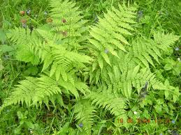

Fougère

Fougère (Toutes les espèces de la famille des Polypodiacées)
Attention : hautement toxique par ingestion pour le Korat !
Partie toxique pour les chats en général et le Korat en particulier :
Toute la plante de toutes les espèces.
Symptômes du processus pathologique :
Diarrhée contenant du sang, urine contenant du sang, tressaillements musculaires, problèmes moteurs, crampes, réactions allergiques.
Origine de la toxicité (principe actif) :
Filicine, floroglucide thiaminase, tanins et hétéroside cyanogénétique.